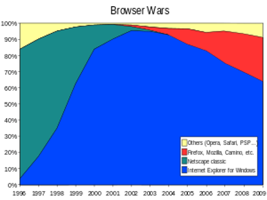

Research on Browser Wars
A Browser War is competition for dominance in the usage share of web browsers. There were 2 main browser wars they were between the years of 1995 and 2017, which means that they occurred fairly recently with the last war ending only 3 years ago
First War
The First Browser War began in the late 1990's with the main competitors being Microsoft's Internet Explorer and Netscape`s Navigator. The first war lasted until 2002 with the eventual winner being Internet Explorer, which went on to become the new dominant browser with a 96% peak in web browser usage shares. This outcome brought an end to innovative web browsers until the release if Mozilla Firefox 1.0 in 2004.
By 1995 the world wide web has received a lot of attention and become popular in culture and mass media, at the time Netscape Navigator was the most widely used web browser and to compete with them Microsoft licensed Mosaic to create Internet Explorer 1.0 which they then distributed for free as part of the Windows 95 Plus pack. Internet Explorer 2.0 was released for free within 3 months of the initial release. The idea of releasing your web browser for free caught on and soon many larger companies were following suit. Netscape Navigator followed suit and bundled their browser with other applications.
After this many rapid updates introduced new features such as Netscape's JavaScript which Microsoft replicated and called Jscript as well as HTML tags like Blink.
At this point it might be sounding like Netscape is in dire time, however , Netscape still had 72% of the web browser usage and it wasn't until Internet Explorer 4.0 was released that they took a major blow. Internet Explorer 4 was what changed the tides of the war as it was integrated into Microsoft Windows which gave it a much larger installation base. The larger pool of money allowed Microsoft to release their browser for free and to use the larger pool of money to further development and advertisement.
In the end Netscape was acquired by America Online for US$ 4.2 Billion. This final defeat allowed Internet Explorer to become the dominant web browser until the second web browser war.
The image above shows Internet Explorer in blue, Netscape in green and Mozilla Firefox in red with yellow being other.
References
En.wikipedia.org. (2020). Browser wars. [online] Available at: https://en.wikipedia.org/wiki/Browser_wars [Accessed 19 Feb. 2020]